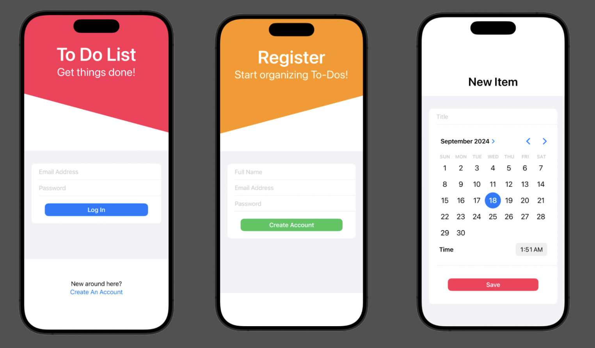
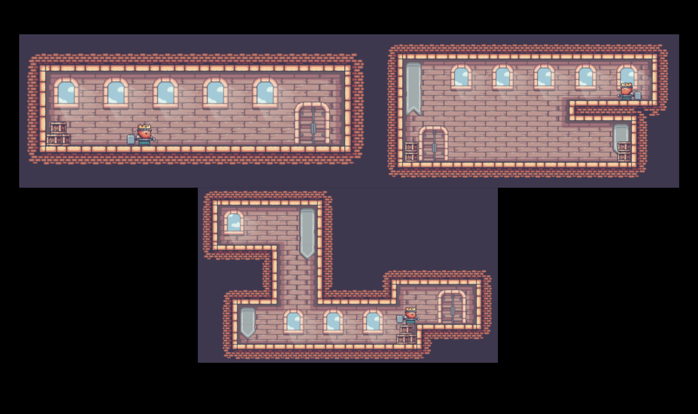
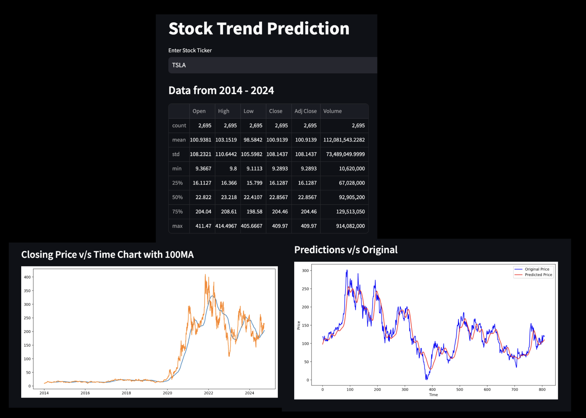
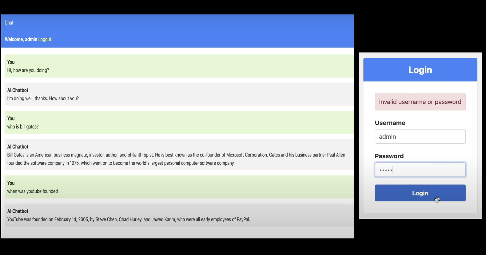
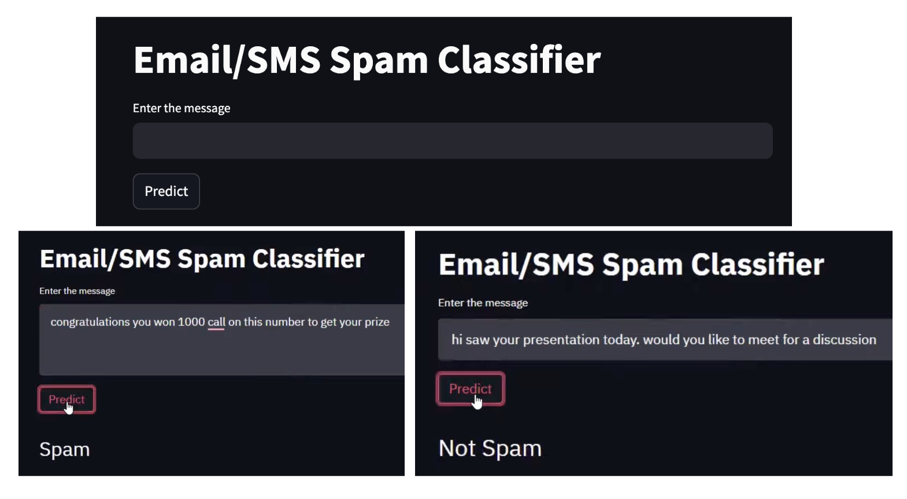
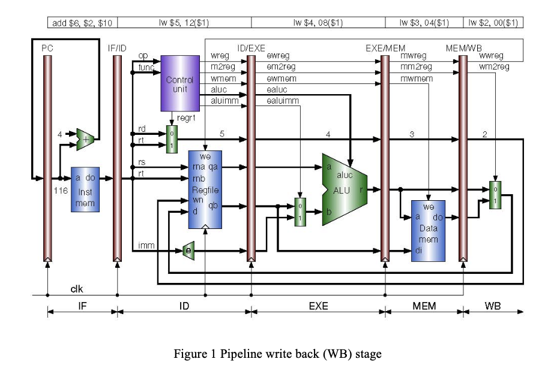
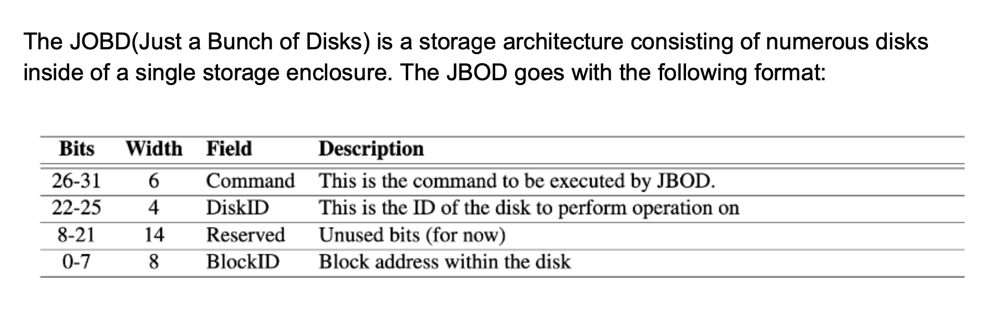
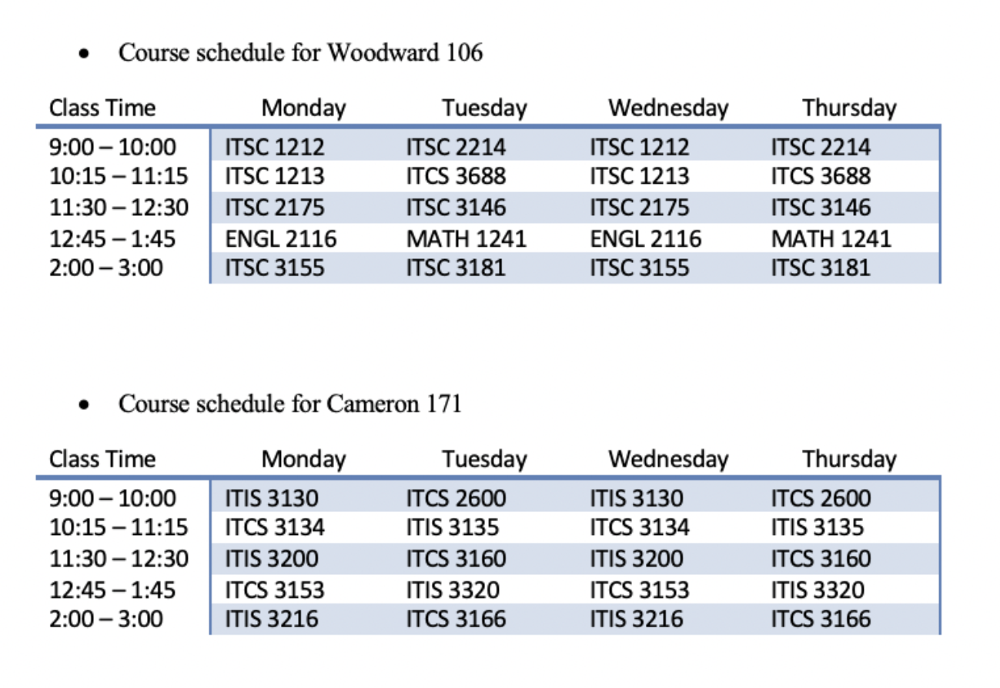
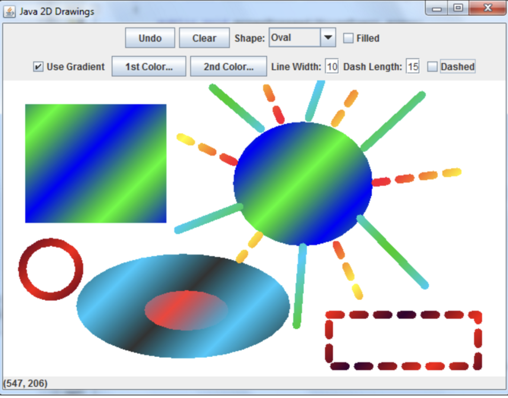
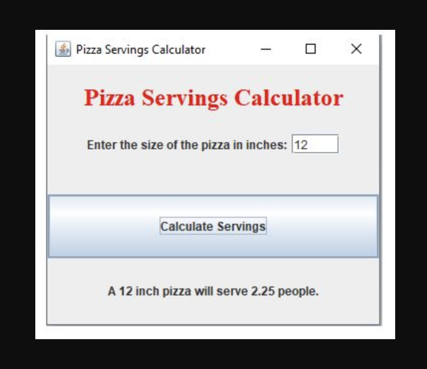

Projects
Twelve builds across iOS, machine learning, systems and the web. Select any card for the full write-up.
Twelve builds across iOS, machine learning, systems and the web. Select any card for the full write-up.
Swift · SwiftUI · GameKit

A multiplayer drawing game built with Swift and Xcode using modern iOS technologies. The game features real-time multiplayer powered by GameKit, letting players connect through Apple’s Game Center and compete in doodle matches. The interface is built with SwiftUI for a sleek, intuitive design across both menu and gameplay screens.
SwiftUI and Combine provide a responsive, reactive interface with real-time updates during play. Network handling keeps matches stable through player disconnections, and custom assets and colours give the game a personalised look.
SwiftUI · CoreData · Firebase

A feature-rich to-do list app built with SwiftUI and CoreData for a dynamic, user-friendly task management experience. Users can add, edit and organise tasks by priority and deadline, with persistent storage so nothing is lost when the app closes. Modern iOS design principles keep the interface responsive across devices.
The app integrates Firebase for secure authentication, enabling personalised user databases and task synchronisation across multiple devices.
JavaScript · HTML5 Canvas · CSS

Kings and Pigs is a web-based game built with HTML, CSS and JavaScript. It uses the HTML5 Canvas API to render interactive graphics and smooth animations, and responsive design keeps it playable across screen sizes.
The game features interactive elements and strategic decision-making, with JavaScript handling game logic, state progression and achievement tracking. Sound effects and background music add an auditory layer to the visuals.
Deployed on GitHub Pages, it runs in any browser with no local installation.
Python · Flask · Jupyter

Stock Prediction forecasts stock prices using machine learning. Built with Python, it applies a range of algorithms to historical stock data to predict future price trends.
The project covers data preprocessing, model training and evaluation, so users can prepare their own stock data, train different models and compare their performance. It also offers insight into the relative effectiveness of different prediction methods.
Django · Python · NLP

AI ChatBot is a conversational chatbot built on the Django framework.
It implements the core chatbot functions — message handling, user interaction and response generation — using Python NLP libraries such as NLTK and spaCy to understand and answer user queries. Django models and views manage chatbot data and user sessions.
The project covers setting up dialogue flow, integrating NLP tooling, and deploying the application, making it a practical base for customising or embedding a chatbot in another Django app.
Scikit-learn · Pandas · Streamlit

Spam Email Identifier detects and filters spam messages using machine learning.
It runs a structured pipeline for data preprocessing, model training and evaluation, built on Scikit-learn and Pandas. Classification models including Naive Bayes and Support Vector Machines analyse message text and predict its category.
The project is a practical example of text classification, covering feature extraction, model tuning and performance assessment.
SystemVerilog · Xilinx Vivado · FPGA

Design and implementation of a pipelined CPU architecture using Xilinx design tools for FPGAs — specifically the first four stages of a five-stage pipeline: Instruction Fetch, Instruction Decode, Instruction Execute and Memory Access.
Each stage was built to operate seamlessly within the pipeline, with rigorous testing to verify correct functionality and efficiency, and precise control signals governing each stage’s operation.
The design and testing process was iterative, with continuous refinement for correctness, efficiency and performance — aiming at a robust pipelined CPU design that maximises speed, reliability and resource utilisation.
C · Shell · Git

JBOD is a straightforward but powerful storage setup: a single enclosure housing multiple independent disks, each functioning autonomously. Unlike RAID setups with data striping and redundancy, JBOD is non-redundant — each disk is a separate logical volume with direct access.
Central to its efficiency is the mdadm module, which drives storage operations. Caching — using a least-recently-used policy — optimises data accessibility and boosts overall system performance.
The mdadm module also handles communication with the JBOD server, which acts as a central hub providing a unified interface for managing the array of drives within the enclosure.
Java · Apache Derby · NetBeans

The Course Scheduler streamlines course scheduling in a college environment. Administrators can manage semesters, courses and student enrolments — adding new semesters and courses while cataloguing student information, keeping scheduling data current and comprehensive.
The interface follows GUI guidelines with usability in mind: dropdown lists and prompt displays of relevant information let both administrators and students work through scheduling tasks without unnecessary friction.
Java · Swing

A Java-based drawing tool built with Swing. It supports shape selection (line, oval, rectangle) via a combo box, colour selection through JColorChooser dialogs, undo and clear options, plus gradient painting, dashed or solid lines and adjustable stroke width.
The layout uses checkboxes for fill and gradient options, JSpinners for stroke width and dash length, and a JPanel for the drawing surface. A status bar displays the current mouse location, improving interaction and feedback.
Advanced features such as gradient painting and dashed lines extend the drawing capabilities, making for a comprehensive and intuitive platform for creating and manipulating shapes.
Java · Swing GUI

A Java GUI application that calculates the number of servings in a pizza from its diameter, implemented with the Swing library in a grid layout.
A JTextField takes the pizza size in inches; an adjacent ‘Calculate Servings’ button triggers an event handler that computes the result and displays it to two decimal places in a JLabel.
The project demonstrates Swing GUI development, event handling and action listeners, and layout management — parsing and processing user input for mathematical calculation.
Java · Python
A retail application combining stock management with billing. Administrators get real-time stock visibility, keeping inventory levels accurate and replenishment timely.
Customers get intuitive billing: entering item quantities produces a total bill quickly and accurately, including taxes and discounts.
The application also supports order management, letting administrators place new orders for low-stock items, with notifications that keep replenishment on time and minimise stockouts.